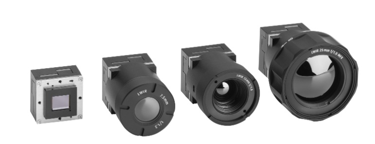

【エグゼクティブ・サマリー】
新興国を中心とした化学・水産プラントや炭鉱における致命的なアンモニア・メタン漏洩事故の多発と、米EPAやEUにおける環境規制の厳格化を受け、産業現場での光学ガス検知 (OGI) 需要が急増しています。従来の作業員による手持ち巡回点検から、ドローン連携や定置型IoT/AIによる「24時間常時モニタリング」への移行が進んでおり、低コストな非冷却型センサや高感度な冷却型SWaP対応モジュールの導入がインフラ保安における競争優位を決定づけています。
業界の最新ニュースと技術トレンド
1.【安全動向】世界的な危険ガス (アンモニア・メタン) 漏洩事故の頻発と監視基準の厳格化
▼ なぜそれが重要か?: 水産加工施設やトンネル掘削現場、炭鉱等において数十人規模の死亡者を出すガス漏洩・爆発事故が相次いでおり、当局による安全基準違反の摘発や防災体制の再構築が急務となっています。
■技術要点: 次世代燃料として注視される液化アンモニア等を含め、目視不可能な毒性・可燃性ガスの拡散を早期に検知・局所化するため、熱画像技術を活用した遠隔可視化アプローチが導入されています。
★インパクト: 点式警報器に依存する従来の管理から、現場から離れた安全な場所でガス雲の広がりをリアルタイム視認できる光学ガス検知 (OGI) の標準化が加速しています。
参照URL: The Hindu / NDTV/ 乗りものニュース等の報道より
2.【規制動向】米EPA・EUメタン規制を受けた定置型IoT/AIによる「常時監視」への全面移行
なぜそれが重要か?: 各国の環境規制強化を受け、エネルギー大手を中心に、従来の年数回の作業員による定期点検から、24時間365日体制での「連続モニタリング (Continuous Monitoring)」への移行が迫られています。
■技術要点: 環境センサー企業によるOGIソリューション企業のM&Aに象徴されるように、固定型カメラとAI画像解析を連携させ、無人で漏洩を検知・監視する統合プラットフォームの構築が進んでいます。
★インパクト: 点検の隙を突いた微量な逃散排出を確実に把握することで、厳格化する規制への適合と製品ガス損失の低減を同時に達成します。
参照URL: 業界各社プレスリリース (Sensirion, TotalEnergies等の事例)より
3. 【導入動向】 ドローン代替テスト承認と非冷却型OGIのインフラ大量導入
なぜそれが重要か?: 広大な油田・ガス田や下流プラントにおける点検業務を効率化するため、高額な冷却型機器を用いた徒歩点検に代わる、低コストかつ広域を網羅できる新たなテスト手法が求められています。
■ 技術要点: 米EPAによるドローン/LiDARベースの代替テスト手法(Alt-Tech)正式承認や、低コストで運用可能な「非冷却型(Uncooled)」OGIとAIを組み合わせたスマート保安へのリプレースが進展しています。
★インパクト: 高所のドローン空撮と地上の手持ち点検を一元化するモジュール活用などで点検コストを30～40%削減し、これまで導入が難しかった中規模施設への一括導入商談を牽引しています。
参照URL: 米EPA規定改正/業界事例 (LNG公社など)より
さらに知る(製品情報)

- • 高感度MWIR冷却モジュール 「ATI EOLE MW」による微量ガス漏れ即時可視化:
メタンや炭化水素系のガス検出に特化した高感度センサを搭載。広大なプラント設備における微量のガス漏洩を遠方から高コントラストでリアルタイムに視認化し、厳格化するEPA等の排出規制や保安基準への適合を強力に支援します。
- • SWaP設計によるドローン・ポータブル機器への自在な展開:
冷却型でありながら超小型・軽量かつ低消費電力 (SWaP) を実現。高所配管網を一括点検するドローン (UxS) 搭載から、作業員の手持ち端末、常設監視用途まで、多様なOGIシステムの開発期間(Time-to-Market) を大幅に短縮します。
- • 低コスト・メンテフリーを実現する非冷却赤外コア 「ATI 320/ATI 640」:
12µmピクセルピッチ採用の非冷却マイクロボロメータにより、冷却クーラーが不要で長寿命かつ低コストな赤外線撮像環境を提供します。中流・下流プラントへの定置式モニタリングカメラの大量一括導入において圧倒的な費用対効果を発揮します。
- • オンボード画像前処理によるシステム負荷の最小化:
モジュール内部で感度不均一補正 (NUC) や自動ゲイン制御 (AGC)を自動実行。ホスト側デバイスの処理負荷をゼロに抑えるため、エッジAIによる異常検知アルゴリズムとのスムーズな連携や高速なアラート制御を可能にします。